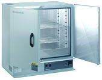

High
Temperature Storage (HTS)
The
High-Temperature
Storage (HTS) test is performed to determine the effect on
devices of
long-term storage at
elevated temperatures without any electrical
stresses applied. HTS is similar to
Stabilization Bake (Mil-Std-883 Method 1008), except that HTS is done over
a much longer period of time
(1000
hours
vs. 24 hours for Stab Bake at 150 deg C).
The purpose of
HTS is to assess the long-term reliability of devices under high
temperature conditions while that of Stabilization bake is merely to serve
as part of
a screening sequence or as a preconditioning treatment prior to
the conduct of other tests.
Both HTS and
stab bake
consist of storing the parts at the
specified ambient
temperature for a
specified
amount of
time. The
devices must be allowed to reach the specified temperature
before the
duration starts counting. End-point measurements must be conducted within
96 hours
after the specified test conditions are removed. For HTS, end-point
measurements include
external visual
inspection
and
electrical testing.
HTS is
not
a substitute
for burn-in because it does not subject its samples to electrical
stresses. Nonetheless, HTS is effective for the reliability testing
of samples in terms of mechanisms accelerated by
temperature
only,
e.g., oxidation, bond and lead finish intermetallic growths, etc.
Any oven or chamber capable of providing
controlled
elevated
temperature may be used for HTS (see example in Fig. 1).
|
 |
|
Figure 1.
Example of a Bake Chamber/Oven that can be used
for High Temperature Storage |
Summary of
industry-standard HTS conditions:
1000 hours at
150 deg C.
Mil
Std 883, Method 1008, Stabilization Bake Specs :
-
storage at a high temperature for a specified duration
-
Test Condition A : 75
deg C / 24 hours minimum
-
Test Condition B : 125
deg C / 24 hours minimum
-
Test Condition C : 150
deg C / 24 hours minimum
-
Test Condition D : 200
deg C / 24 hours minimum
-
Test Condition E : 250
deg C / 24 hours minimum
-
Test Condition F : 300
deg C / 24 hours minimum
-
Test Condition G : 350
deg C / 24 hours minimum
-
Test Condition H : 400
deg C / 24 hours minimum
Reliability
Tests:
Autoclave
Test or PCT; Temperature
Cycling; Thermal
Shock;
THB;
HAST;
HTOL;
LTOL;
HTS; Solder
Heat Resistance Test (SHRT);
Other
Reliability Tests
See Also:
Reliability
Engineering;
Reliability Modeling; Qualification
Process; Failure
Analysis;
Package Failures; Die
Failures
HOME
Copyright
©
2001-Present
www.EESemi.com.
All Rights Reserved.